Pits of Despair (Layer 5) — Volcanic Forge-Prison
Creative vision: Volcanic forge-prison where scorched basalt cracks reveal ember-orange heat from below. Sauron's active torture chambers.
Palette: scorched basalt (#2A1F1A), volcanic ash grey (#4A4240), ember orange (#C85A3A), dried blood red (#5c1a1a), soot black (#120D0B)
Tileset: Row 22, Cols 0-11
Phase 1: Anchor Tiles REVIEW
Wall (Light)
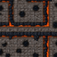
Row 22, Col 0
Wall (Dark)
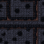
Row 22, Col 1
Floor (Light)
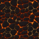
Row 22, Col 2
Floor (Dark)
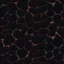
Row 22, Col 3
Phase 2: Doors (Programmatic) REVIEW
Door Closed (Light)
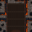
Row 22, Col 4
Door Closed (Dark)
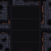
Row 22, Col 5
Door Open (Light)
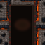
Row 22, Col 6
Door Open (Dark)
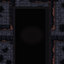
Row 22, Col 7
Phase 3: Stairs (Ember Recolor) REVIEW
Stairs Down (Light)
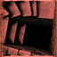
Row 22, Col 8
Stairs Down (Dark)
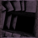
Row 22, Col 9
Stairs Up (Light)
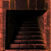
Row 22, Col 10
Stairs Up (Dark)
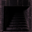
Row 22, Col 11
Phase 4: Environmental Tiles REVIEW
Procedural
Bloodstained Floor (Light)
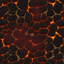
1.5x move cost
Bloodstained Floor (Dark)
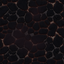
Smoldering Grate (Light)
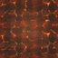
Fire damage on step
Smoldering Grate (Dark)
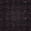
Blood Pool Trap (Light)
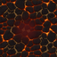
Vampiric drain trap
Blood Pool Trap (Dark)
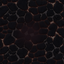
Scattered Bones (Light)
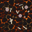
Floor decoration
Scattered Bones (Dark)
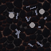
DALL-E
Iron Maiden (Light)
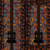
Blocks movement
Iron Maiden (Dark)
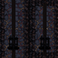
Shadow Tapestry (Light)
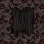
Wall decoration
Shadow Tapestry (Dark)
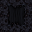
Raw DALL-E Output (256px)
Shadow Tapestry
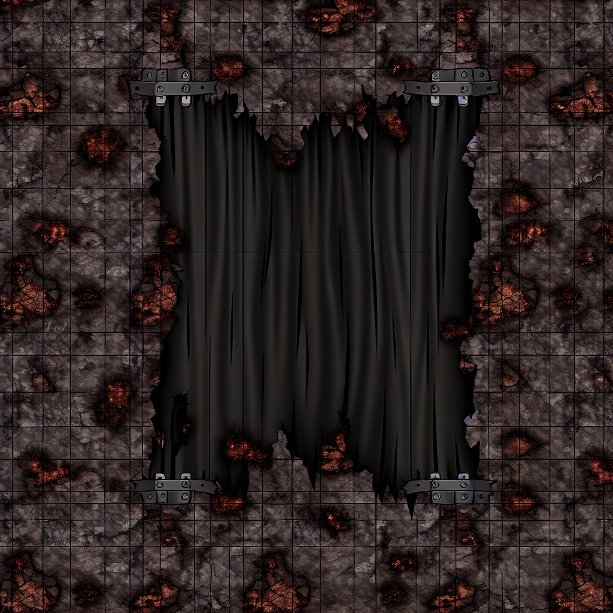